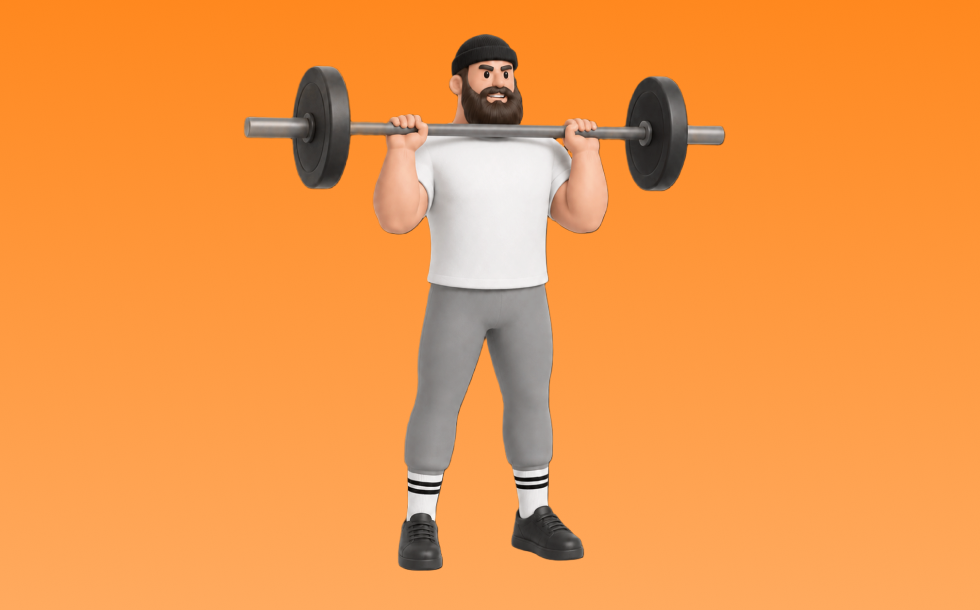

オーバーヘッドプレス

オーバーヘッドプレスとは、バーベルを使って「押す」動作で肩（三角筋）、腕（上腕三頭筋）を鍛える種目です。高重量を扱いやすく、筋力を伸ばしやすいのが特徴で、反動を抑えてコントロールしながら反復します。肩の厚みづくりとオーバーヘッドの押す力の向上が期待できます。
- 対象部位
- 肩
- 器具
- バーベル
- 記録形式
- 重量・回数
- 別名
- ミリタリープレス / ohp
YouTube動画
-
【筋トレ初心者はこれ見て！】肩を鍛えるオーバーヘッドプレスのフォーム解説【ミリタリープレス】
-
【初心者向け】怪我をしないオーバーヘッドプレスの正しいやり方【フォーム解説】
-
肩を鍛えるオーバーヘッドプレスのやり方【筋トレ】
-
【オーバーヘッドプレス】怪我を減らしフォームを安定させるための6つのモビリティエクササイズ
-
【オーバーヘッドプレス】高重量を挙げるコツとフォームの作り方
-
【オーバーヘッドプレス】肩を効率的に鍛える！BIG3に1種目加えるならコレだ！【肩トレ】
-
【これで伸びる】オーバーヘッドプレスちょっとうまくなる5つのコツ
-
【オーバーヘッドプレス】肩を強化し、体の連動を使うフォーム解説【バーベルショルダープレス】
-
【ショルダープレス】肩と腰を怪我せずに三角筋を鍛えるフォーム解説
-
【オーバーヘッドプレス】自然に押し出すための正しいバーの握り方
-
ダンベルショルダープレスのやり方・フォーム | 「肩関節や肘が痛い」「椅子の角度が不明」初心者向け動作説明です！
-
中年は中年の体に合ったショルダープレスをやるべし。衰えた肩、固い肩の修正。かっこいい三角筋
-
【初心者必見‼】オーバーヘッドプレスの『正しい背中の使い方』
-
【オーバーヘッドプレス】重量が伸び悩む原因「体のブレ」を改善する方法
-
【どのフォームが正しい？】肩トレで人気のショルダープレス、サイドレイズで気になるポイントを全部解説します【筋トレ】
-
肩トレの極意！これを知って、丸い肩を作ろう！
-
肩の健康を守れ！オーバーヘッドプレスについて徹底解説【BIG3補助種目】
YouTubeショート
-
【ショルダープレス】怪我をしない正しいフォーム解説 #shorts
-
正しいショルダープレス4つのポイント #筋トレ
-
初心者にありがちなミス スミスマシン ショルダープレス🏋️♀️
-
マシンを使ったショルダープレスのコツ
-
見逃すな！ショルダープレスの鉄則！ #肩トレ #自宅トレーニング #ショルダープレス
-
正解はこれだ‼︎ミリタリープレス編 #筋トレあるある #筋トレ初心者 #肩トレ
-
肩の補助種目はミリタリープレス一択！！
-
腕のやり方🔥〜ケーブルプレスダウン基礎編〜 #筋トレ #筋肉 #筋肉社長 #腕トレ
-
ベンチプレスの正しいやり方を紹介 #筋トレ #フィットネス
-
【これ、間違いです】腰反りオーバーヘッドプレスの改善方法 #shorts #筋トレ
-
胸トレで腕肩を使わないコツ #筋トレ女子
-
【ダンベル】肩トレ3選 #筋トレ
-
アスリート必見！？ミリタリープレスとは？
-
みなさんはミリタリープレスやってますか？持田選手がしっかり三角筋に効くトレーニングをレクチャーしてくれました！#volix #肩トレ #ちょこっとおしい #三角筋 #volixgear
-
効かせるショルダープレス
-
【オーバーヘッドプレス】肘がズレると腰がぶっ壊れます
-
ダンベルショルダープレスのコツ。 #fitness #フィットネス #筋トレ #細マッチョ #workout
-
初心者向け🔰チェストプレスのワンポイントアドバイス！ #筋トレ
-
【肩トレ解説】スミスバックプレス #筋トレ解説 #肩トレ #肩トレーニング
-
正しいサイドレイズ4つのポイント #筋トレ
-
正しいダンベルベンチプレス5つのポイント 【筋トレ】
-
肩に効かないショルダープレス #筋トレ
-
【体幹の正しい使い方】オーバーヘッドプレスが上手くなる秘訣
-
肩トレこの3種類で十分やと思うねんけど、マッチョ警察の方々どう思う？
-
胸トレのやり方🔥〜ダンベルプレス基礎編〜 #筋トレ #筋肉 #筋肉社長 #胸トレ
-
【山岸秀匡】肩の基本種目第一弾！スタンディングミリタリープレス
-
正しいミリタリープレスのやり方 | ボディビル日本チャンピオンが解説 #shorts 【ビーレジェンド プロテイン】
-
みなさんはダンベルショルダープレスやってますか？持田選手とこんがりさんが三角筋に効くトレーニングをレクチャーしてくれました！#筋トレ #volix #肩トレ #ちょこっと惜しい #三角筋
-
細マッチョの胸トレはベンチプレスだけで十分🏋️ #筋トレ #宅トレ #細マッチョ
-
【オーバーヘッドプレス】全力で押せるバーの握り方！！
-
【肩トレ】スミスマシンショルダープレスのやり方解説
-
マルチプレスショルダープレス基礎編使い方
-
バーベルショルダープレスのやり方#初心者 #ジム #バーベル
動作方法
- 安定した姿勢を作り、肩と体幹を固定する
- 狙う部位を意識して、反動を使わずに押す
- 可動域を保ちながら、ゆっくり元に戻す
動作ポイント
- 肩をすくめない
- 手首を寝かせすぎない
- 反動を使いすぎない
ワンポイントアドバイス
- 重量よりも肩の軌道を安定させる
- 首まわりの力みを減らして行う
目的別回数設定
目的や体力に応じた一般的な目安です。無理のない範囲で調整してください。
- 筋力アップ
- 1〜5回
- 筋肥大
- 6〜12回
- 持久力アップ
- 13〜20回
YouTube動画について
動画はYouTubeの公開情報をもとに表示しています。内容は投稿者によるもので、Biggrによる監修ではありません。
アプリを入手
筋トレやトレーニングの記録はBiggrにお任せください。今すぐ無料で使い始められます。